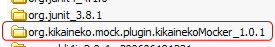
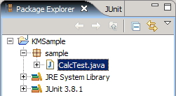
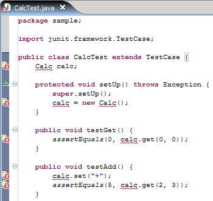
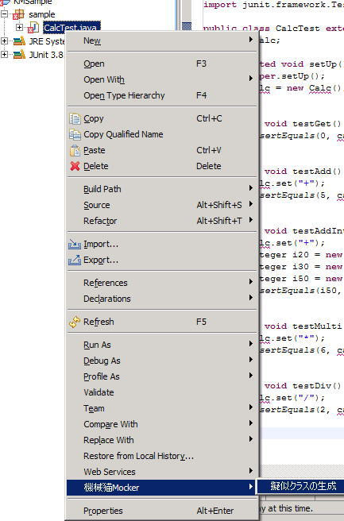
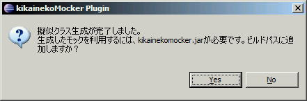
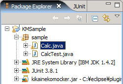
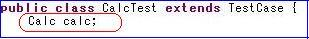
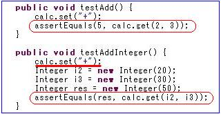
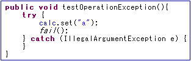

KikainekoMocker
Java
Mock
TOC
- Quick Start
- Test Code Sample
- How to Write Test Codes
- Prerequisites & Constraints
- Executing from Text User Interface
When an error occurs installing or using KikianekoMocker, refer to "Dealing with KikainekoMocker Problems" as well.
Quick Start
Installing Kikaineko Mocker Plugin
- Download Kikaineko Mocker, and upzip it.
- Place the unzipped folder under the plugins folder of your eclipse directory.

That's it! We're done with installing the plugin.
Creating Test Codes
- After installing the plugin, run your Eclipse platform.
- Here, we create a java project " KMSample ".
- Create package " sample " in the KMSample project.
- Create CalcTest.java under the sample package.
- The code given as an example at "Test Code Sample" is implemented here in CalcTest.java.
- Obviously, since the Calc class does not exist, Eclipse shows many errors.


Executing KikainekoMocker
- Right click CalcTest.java.
- Click on [KikainekoMocker] - [Generate Pseudo-Class].
- A message may appear to warn you that the kikanekomocker.jar is needed to use the pseudo-class. Confirm, and click "yes".
(This message will appear only at the first time of exceution) - Then you'll see that Calc.java is generated.



Executing the Test Class
Test Code Sample
A Sample Test Case for KikainekoMocker
KikaienkoMocker generates a pseudo-class which passes a JUnit test case.
For example, it is possible to generate a pseudo-class which passes the
following test case.
package sample;
import junit.framework.TestCase;
public class CalcTest extends TestCase {
Calc calc;
protected void setUp() throws Exception {
super.setUp();
calc=new Calc();
}
public void testGet(){
assertEquals(0,calc.get(0,0));
}
public void testAdd(){
calc.set("+");
assertEquals(5,calc.get(2,3));
}
public void testAddInteger(){
calc.set("+");
Integer i20=new Integer(20);
Integer i30=new Integer(30);
Integer i50=new Integer(50);
assertEquals(i50,calc.get(i20,i30));
}
public void testMulti(){
calc.set("*");
assertEquals(6,calc.get(2,3));
}
public void testDiv(){
calc.set("/");
assertEquals(2,calc.get(4,2));
}
}
As you can see in the test case CalcTest, KikainekoMocker supports primitive types
and objects. KikainekoMocker handles most kinds of data types.
(Refer to "Prerequisites & Constraints" for
detailed description of supported data types.)
Also, it is possibe to generate a pseudo-class which passes the following test case.
package sample;
import junit.framework.TestCase;
public class TokenTest extends TestCase {
Token token;
protected void setUp() throws Exception {
super.setUp();
}
public void testNext(){
token=new Token("a=10*c;");
assertEquals("a",token.next());
assertEquals("=",token.next());
assertEquals("10",token.next());
assertEquals("*",token.next());
assertEquals("c",token.next());
assertEquals(";",token.next());
}
public void testLength(){
token=new Token("a=10*c;");
assertEquals("6",token.length());
}
}
As you can see in the test case TokenTest, the same method is called several times,
but KikanekoMocker can handle this with out any problems.
With some tools, you can only define one return value per method, but
KikainekoMocker decide the return value according to the method's execution order.
When the pseudo-class to generate already exists, KikanekoMocker comments out the existing code and writes the new pseudo code.
How to Write Test Codes
KikainekoMocker evaluates ordinary test cases, but there are a few points in writing test cases for KikainekoMocker. Refer to "Prerequisites & Constraints" for detailed descriptions, at the same time.
Some pointers in writing test cases for KikainekoMocker will be explained.
Defining the Pseudo-Class for Generation
KinkainekoMocker judges which class to generate as the pseudo-class by the
field of the test case.
Declare the pseudo-class as the first field of the test case.

In this case, the pseudo-class Calc is generated.
- Declare the pseudo-class as the first field of the test case.
- At this point, do not instantiate, or assign null for its value.
If an interface such as "SomeInterface calc;" is specified, a pseudo-class which implements that class is generated.
If a superclass such as "SomeSuperClass calc;" is specified, a pseudo-class which extends that class is generated.
The java file to generate is determined from the instantiation of the defined field.
For example, when the following is written in the test case, KikainekoMocker generates Calc.java.
calc = new Calc();
Also, KikainekoMocker supports instantiation by DI (Dependency Injection) or factory methods.
KikainekoMocker executes the DI or factory method. If it succeeds and an object is returned, KikainekoMocker retrieves the class name, using it for the pseudo-class to generate.
For example, whent the following is written in the test case, KikainekoMocker generates HogeInterfaceImpl.java.
HogeInterface hoge; hoge = (HogeInterface)di.getComponent();
Define the Result of a Method Mainly with "assertEquals()"
If a method of a pseudo-class has a return value, specify it with
"assertEquals()".
(Do not use "assertEquals()", if the method does not have a return
value, i.e. void return type.)
It does not matter in which the expected and actual value is written.

* Using Indeterminate Values
Even if a return value of the pseudo-class method is written without using "assertEquals()" as follows,
int i = calc.get(2, 3);if the value is resolved later on in the test code, that value is judged as the return value.
calc.set("+");
int i = calc.get(2, 3);
assertEquals(5, i)
When using indeterminate values, please be careful of the following:
- Do not use as an argument of another method before resolving the indeterminate value.
- If the indeterminate value is an Object type, it does not have to be resolved. Also, methods of the Object type can be used.
- Final Classes cannot be used as indeterminate values.
Throwing Exceptions
When a method of the pseudo-class throws an exception, use the try / catch / fail statements.
KikainekoMocker determines that the method written before the fail() statement, throws an exception.
KikainekoMocker determines that the first exception caught in the catch statement, is the exception thrown from the relevant method.

In the example above, when calc.set("a") is called an IllegalArgumentException is thrown.
It is possible to specify custom exceptions to be thrown from methods.
[to top]Prerequisites & Constraints
Prerequisites
KikainekoMocker parses test cases following Java 1.4 grammar specifications, but is not complete. Here, detailed differences is shown.
* Data Types which can be used
KikainekoMocker cannot safely handle all primitive types. In particular, the following types are not supported.
- float (cannot handle octal or hex number format)
Constraints in Writing Test Cases
When writing test cases for KikainekoMocker, the following must be obeyed.
Some of these constraints will be resolved in the future.
- The following reserved words for KikainekoMocker cannot be used in the tese case. switch, case, default, return, this, synchronized, class
- Declare the pseudo-class to be generated as a class field. With
this declaration, KikainekoMocker determines the pseudo-class.
Declare the pseudo-class as the first field of the test case. - Does not support static methods of the pseudo-class.
- Cannot use control flow statements such as "switch".
Also, "continue" statement cannot be used.
Executing from Text User Interface
Ordinarily, KikainekoMocker is to be used as an Eclipse Plugin,
but it can be called from a text format.
The MockMaker class is used.
In particular, execute the following method of the MockMaker class.
public static void main(String[] args){
try{
String[] ss={"src\\sample\\SampleTest.java"};
MockMaker.main(ss);
}catch(Throwable t){
t.printStackTrace();
}
}
Specify the file path name of the test case, a relative path name from the Eclipse
project, as a String array("ss" in the code above).
The MockMaker class exists under the package org.kikaineko.mock.textui.
Contents
- Home
- What can KikainekoMocker do?
- How do you use KikainekoMocker?
- How does KikainekoMocker work?
- Download
- KikainekoMocker Demonstration